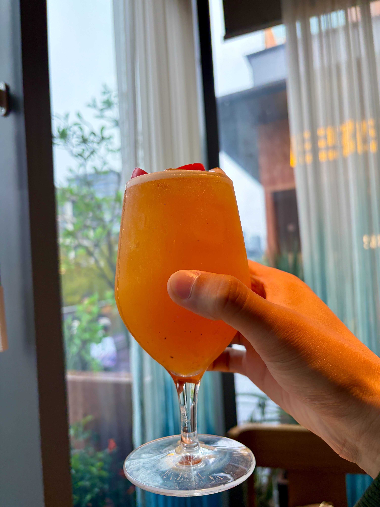
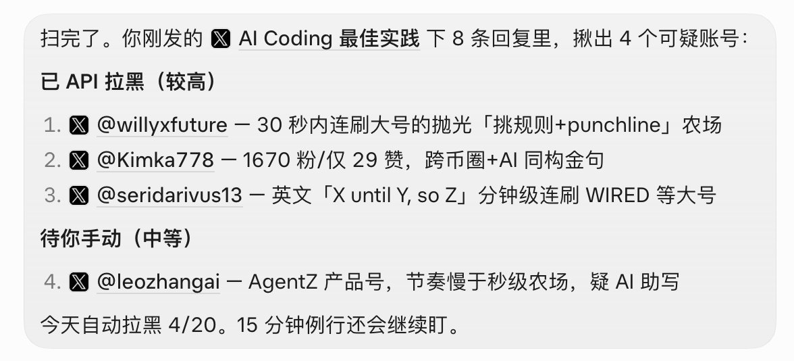

Tw93 的 20 条 AI Coding 规则，和评论区推荐
Tw93 用一个下午手写了一份 AI Coding 最佳实践，分需求、规则、编码、排查、审查、发布、复盘七组共 20 条（第 18 条写了两遍），想让读者和自己的 Agent 一起学。核心意思是：把要求提高、把背景讲足、把技术细节交给 Agent；同时用脚本、独立 worktree、分开的审查 Agent 和回归用例把风险卡住。评论区里有人推荐了 Thorsten Ball 的文章、自己的 AGENTS.md、拉黑 AI 回复的 Grok Bot，以及 mattpocock、poteto 的 skills，下面最后两节单独整理。
原帖 本页导读约 12 分钟
作者说，他想试试把自己的 AI Coding 经验整理成规则，让大家复用，于是花了一下午琢磨，手写、反复调整，希望读者带着自己的 Agent 一起学。所以这份清单既是写给人看的，也可以直接放进 Agent 的规则文件里。

补充：原帖没有外链，正文里唯一的短链指向这张配图。X 接口返回的帖子正文被截断在「1.」，全文取自同一接口的 note_tweet 字段，并和 fxtwitter 的抓取逐字对过。
要求提高、背景讲足，技术细节交给 Agent，但每次只做最小可用的一步
第 1 条：不再从技术实现细节写起，改成「许愿式编程」。作者的理由是现在模型能力已经足够强，你只要大胆说出想法、提足够高的要求，不必担心 AI 实现不了。
第 2 条：多给你的 Agent 讲背景和目标——为什么要做、给谁用、做成什么样你认为最好；少替它考虑技术细节，技术细节由它自己拿主意，作者的说法是「学会放手」。
第 3 条：优先用业界最好的模型。用差模型，一来来回返工让人不高兴，二来浪费了很多时间。
第 4 条：要不要做一个新功能、加一个新配置或开关，先让 Agent 来问你、找你确定；没人用的功能、开关、文案一律别加。这样慢慢把你的产品规范沉淀给它。
第 5 条：想法可以很大，但让 Agent 干活时每次只做一个最小的、能用的版本，别一口气写大量代码；这样出了问题你可以随时撤回。
让 Agent 听懂「看看」和「修复」的区别；必须遵守的规则靠脚本，不靠 prompt
第 6 条：让 Agent 熟悉你的说话风格。你说「看看、分析一下这个问题」时，它只读代码、分析问题，不改代码；你说「修复、修改」时才动手。每次提交、发布和删除都要找你确定。
第 7 条：Agent md、CLAUDE md 里除了重点的项目型要求，只写从代码里看不出来的规则；以前否决掉的方案也可以记进去。另一半是安全提醒：密钥、token 别给 Agent；一旦贴出去就按泄露处理，马上换新的。
第 8 条：硬性规则别全指望 prompt，它可能拦不住；得靠规则脚本来卡，让 Agent 真实跑一遍、通过了才算完成。
动手前先说要改哪里；项目里要有 Agent 能自己跑的验证脚本；多 Agent 各用一份 worktree
第 9 条：动手写代码前，Agent 要先说明改哪里、会影响哪些功能和效果。目的是补充你的上下文，方便你后面判断和决策。
第 10 条：必须让 Agent 给项目补一个验证脚本，能自己验证各种结果；在特定时候跑一下，完成功能后检查，把结果输出给你看。基于这些结果，逐步沉淀你项目的 Agent 测试功能集。
第 11 条：多个 Agent 同时干活时，每个 Agent 用自己独立的 worktree 目录；提交时只提交自己改的代码，不碰他人的代码。各自改完合到一起后，再完整跑一遍测试。
修两次不好就加日志，三次不好就清空上下文重来；审查最多三轮
排查
原文 · 排查第 12 条：修 Bug 先找到原因再动手。修了两次还没好，就加日志，看真实数据和运行效果，别盲猜问题出在哪。
第 13 条：假如修复了3次还不对，直接清空上下文，把你的问题、诉求和试过的解法重新写一遍，让 Agent 重新开始。
审查
原文 · 审查第 14 条：写代码的 Agent 和做 Review 的 Agent 要分开，不能是同一个，两边解耦，免得互相带偏。
第 15 条：让 Agent 做 Review 最多跑 3轮，免得停不下来；第二轮起只看新改的部分，已经审过的不再重看。
第 16 条：危险的改动，越危险让它查得越深。特别是删除、付费、发布这种单向门改动，你都要自己看一遍、点一下，看实际效果。
提交说明写清验证与回滚；先给尝鲜用户；每个线上 Bug 都留一个测试案例
发布
原文 · 发布第 17 条：每次提交，提交说明里要有三样：做了什么、怎么验证、出问题怎么回滚。作者的理由是：git 记录本身就是后面开发时 Agent 非常好的上下文。
第 18 条（原帖写了两遍，第二遍是第一遍的简写）：需要对外的功能，先给自己用，或给一批愿意尝鲜的用户用，没问题再发给所有人，不要一上来就全量。可以在软件里加一个 beta 更新的开关，防止全量出问题，这也是对用户负责。
复盘
原文 · 复盘第 19 条：每个线上 Bug、每条用户反馈，Agent 都要都要有对应的测试案例，上线前统一跑，防止继续踩坑。换模型时也可以把这些旧问题全部跑一遍，看看新模型是否还行。
第 20 条：修复问题时，让 Agent 举一反三，同类问题一并修掉。优化功能、完善视觉也一样，防止只改一个地方、忘了其他地方。
作者用 bot 拉黑 AI 机器号；他认为用最好的模型时不必看懂代码
发帖约半小时后，作者在评论区置顶式地喊话：请 AI 机器号不要在这条下面评论，他的 Bot 在自动拉黑；如果误删，欢迎找他。原回复附了一张截图（原图 2）。

有人问配图是不是每写一篇就喝一杯，作者回答：要写东西，先得有张喝过的照片；没有就先去喝一杯，再动笔。
@AsyncXBit 说自己讨论需求时还是会告诉 Agent 各种细节，因为怕看不懂它写的代码。作者回复：这个阶段已经不必看懂代码；假如你用的是最好的模型，他觉得你可能更多是在难题上辅助它排查，并告诉它一些产品上的关联。（原评论）
@Poyang_rex 对第 2 条有异议：很多时候还是要讨论技术细节，尤其是 UI 的选择，不然 Agent 给他做的 iOS 应用全是 SwiftUI。作者回复说有道理，可以让 Agent 给你一些方案选择，或者提前告诉它。（原评论）
补充：结合这两段回复看，第 2 条的「少管技术细节」不是不许讨论，而是默认交给 Agent；对你在意的选择（例如 UI 技术栈），可以要它先给方案或提前说明。这是本页的归纳，不是作者原话。
一篇文章、一份 AGENTS.md、一个拉黑 AI 回复的 Bot、两套 skills 和一个日志思路
推荐人 @lovedebug · 文章：Thorsten Ball（@thorstenball）的 X 长文《How I work with Agents》链接。（原评论）
补充：为什么值得看（本页判断）：我打开了这篇长文（2026-10-25 发布）。它和本帖讲同一件事，多处呼应：用最新最强的模型；描述要什么而不是怎么做；让 Agent 看得见整个开发流程（日志、部署、发布）；要求它拿出无可辩驳的证据；只审爆炸半径大的代码。
推荐人 @yujiachen_y · 仓库文件：他自己的 AGENTS.shared.md。他拿本帖对比后觉得，现在模型已经很遵循规则了，更值得写的是做事方式的统一：什么时候停下来、什么时候继续、先调研再提出方案。（原评论）
补充：为什么值得看（本页判断）：可以对照一份真实在用的规则文件。我打开确认文件存在，里面有「Advice and decisions」一节，写了先给出自己会选的方案、事实要从最原始的来源取、可逆的选择自己做等规则。
推荐人 @HiTw93（作者本人）· 工具：有人问作者拉黑 AI 回复用的是什么工具，作者甩了图拉鼎（@tualatrix）发布的那条帖子，帖子说这个「产品」已经发布，可以加到 Grok Bot 里使用。（提问 · 作者回复）
补充：为什么值得看（本页判断）：作者自己就在用它清理本帖下的 AI 回复。
推荐人 @37FlowAI（@ARTHUR_YANG_CHN 附议）· skills：建议作者参照 mattpocock、poteto 两位的 skills，把 Waza 做得更系统。作者回复「整！」，又对附议者说「等着，他来做个更厉害的」。（原评论 · 作者回复 · 作者回复 2）
补充：为什么值得看（本页判断）：评论区至少三人拿这两位的 skills 当参照（@37FlowAI、@ARTHUR_YANG_CHN，另有 @JingDi21 提到 mattpocock），作者也表示要做一套。
补充：评论只 @ 了人，没给链接。我查到的对应位置：Matt Pocock 的仓库 mattpocock/skills（简介「Skills for Real Engineers. Straight from my .agents directory.」）；poteto 没有同名的单一仓库，这里给 GitHub 主页，主页上有 how、noodle、brainmaxxing 等 skill 相关仓库。评论具体指哪套，未确认。
补充：图拉鼎那条帖子里的链接指向 Grok Bot「X机器人回复判定 by Tualatrix」，我打开确认页面存在；页面说明写的是：盯住你帖子下的回复，带证据标出像 AI 或机器人的回复，记进 Google Sheet，再隐藏并拉黑你选中的那些。
推荐人 @hiheimu · 仓库：问 Waza 是不是按这套经验归总迭代的，他本想自己整理成一个 skill 或一份 agent.md。作者没有回答这条，所以 Waza 是否已包含这 20 条，未确认。（原评论）
补充：Waza 是作者的开源项目 tw93/Waza，仓库简介是把工程习惯做成 Claude Code、Codex、Cursor 等 AI 助手能运行的 skills。
推荐人 @reaizuguoaidang · 做法：第 12 条「加日志」可以更进一步——开发时就把日志加上，出问题后给 Agent 接日志系统的 MCP，上下文给足了，模型就不用猜，定位很快。作者回复「是的」。（原评论 · 作者回复）
补充：为什么值得看（本页判断）：把第 12 条从临时加日志变成常备设施。
补充：他在另一条楼中楼里举的例子是 Loki 和阿里云 SLS（Grafana Loki、阿里云日志服务）；那条回复本页没有收进原文材料，具体接哪个 MCP 未确认。
先把需求变成测试；任务文档先交给另一个 AI 审
@lucinelupita2（这条在本页抓到的回复里点赞最多，25 个）：接第 17 条，他在尝试先把 spec 全部变成一套 behavior testing suite——不让 Agent 只用文字描述，而是先把需求整体写成验证代码，由人确认这些行为测试的检查点对不对，然后交给 loop 去实现。他概括为 SDD（初始文字需求）→ BDD（「量化」需求）→ TDD（执行）。作者回复「学习到了」。（原评论 · 作者回复）
@fishShadower：每个任务开一个 task 目录，放一份 readme，写清背景、目标、范围、边界、设计、步骤、禁止、验收测试；先不急着做，让其他 AI 审查这份文档，检查漏洞、是否过度设计；任务结束后再让另一个 AI 按文档做代码评审。task 多了还能总结优化。（原评论）
@JeanzXiang：第 1 点是「有效信息 + 放权」：派活时把几件事认真交代清楚——诉求背景、个人思考、目标期望、成果质量、回归方式，他统称为派发任务的【元信息】，其余随意带过，然后开 /plan、调高思考强度，实现全放权给 AI。第 2 点是「一天做完三件事，一周做完一件事」：大功能要尽可能让 AI 领会你要做什么，再让它拆成子功能，分几个版本陆续上线，不要指望一次对话搞定。（原评论）
@EliLai4：贴了自己 AGENTS.md 里的「举一反三」规则——修复时发现其他模块有同类问题，以「共性问题」简要报告范围和依据，区分已确认问题和待验证风险；线索只来自执行时顺手发现的，不主动做全局排查、不扩大改动范围，任务明确要求时除外。和第 20 条相比，它给举一反三加了边界。（原评论）
@telunsu36：第 6 条的真实案例——他说「看看、出个方案、检查xxx」，Agent 直接动手做了；他把 sheet 说成抽屉，Agent 也不问，直接写了个 modal。后来他赶紧在 agent.md 里加了限制。（原评论）